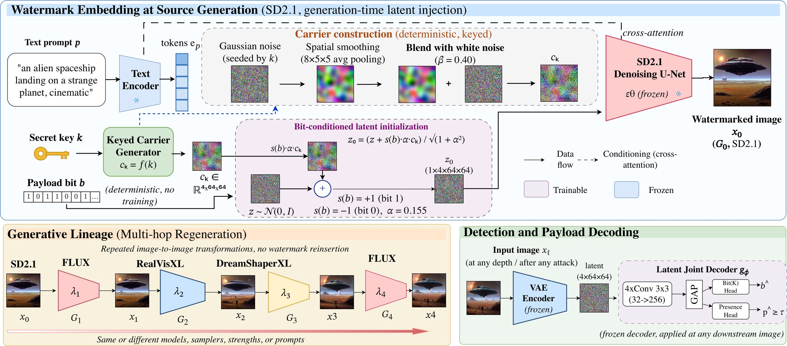
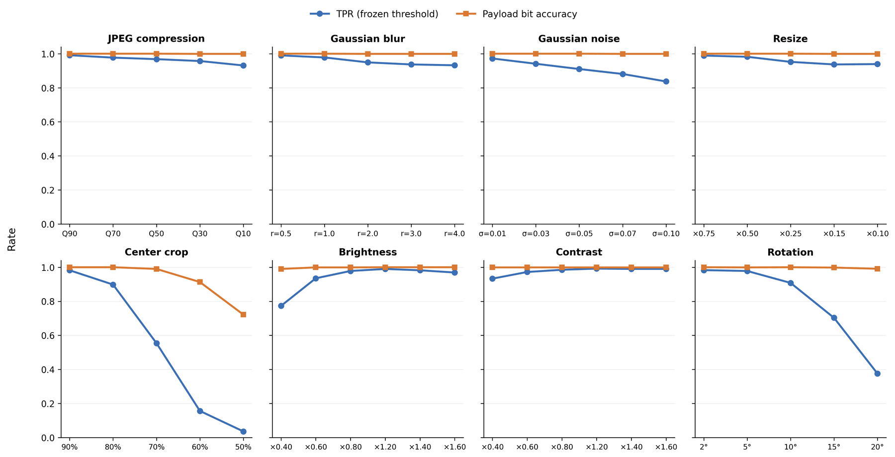
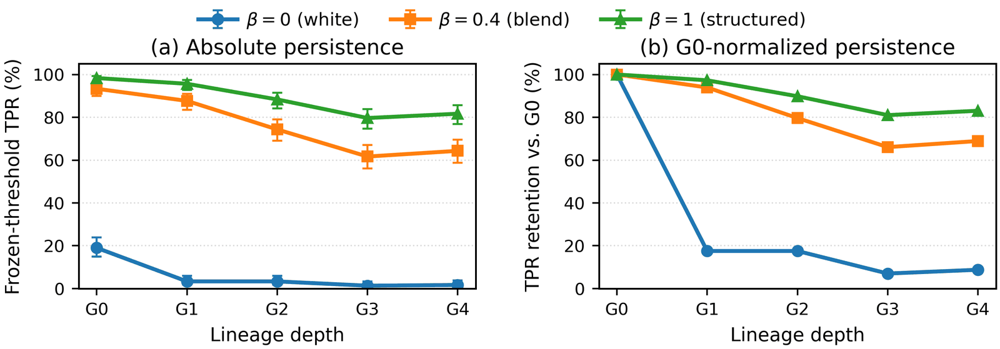
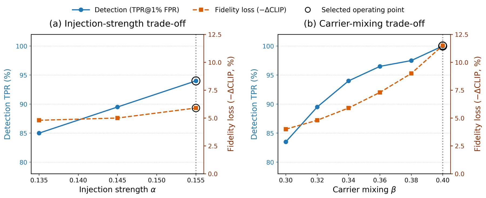
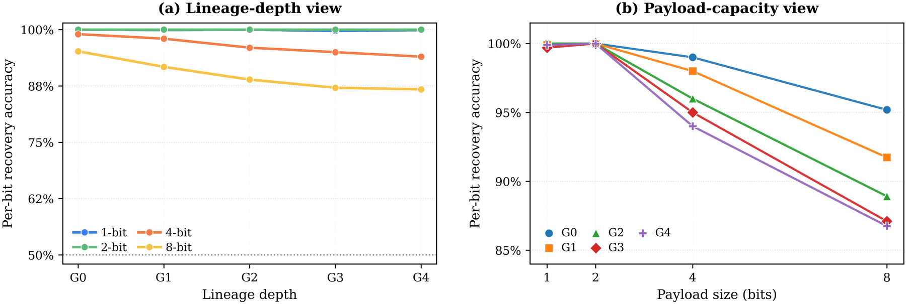

Insert once, detect later. RESON embeds a keyed, message-bearing carrier into the source diffusion noise once. The watermark stays detectable directly from pixels after the image is re-synthesized by a chain of different generators — no reinsertion, no generator modification, no diffusion inversion.
Inserted once at G0; every later image comes from an unmodified, watermark-unaware generator.
AI-generated images are increasingly edited and re-synthesized by downstream generative models, yet existing watermarking evaluations largely focus on single-stage transformations rather than provenance across successive generations. We introduce RESON, a generation-time latent watermark for generative lineage persistence that embeds a keyed, message-bearing carrier once in the source noise and enables detection directly from pixels, without downstream reinsertion, generator modification, or diffusion inversion.
We evaluate the method across heterogeneous multi-hop lineages, alternative lineage orderings, conventional perturbations, deliberate generative removal attacks, and varying payload capacities. The watermark remains detectable through repeated cross-model re-synthesis while retaining recoverable source-associated information at increasing lineage depths.
Controlled carrier and strength ablations show that persistence is driven by structured carrier content rather than injection energy alone, while generation-quality analysis indicates limited degradation in semantic fidelity. Together, these findings establish generative lineage persistence as a distinct watermarking objective and demonstrate the feasibility of insert-once, detect-later provenance across heterogeneous generative transformations.
If provenance information is inserted once at source generation, can it remain recoverable after repeated re-synthesis by heterogeneous downstream generators — without reinsertion or downstream cooperation?
A single source-time watermark survives four successive re-syntheses by FLUX and SDXL-family generators: 92.50% TPR at 1% FPR and AUC 0.9963 at G4 (SD2.1 source).
Evidence → Table 1, Figure 2Under the matched G0–G4 protocol, RESON has the highest TPR at G3–G4 among the evaluated methods for both SD2.1 and SD2.0 sources; inversion-based watermarks degrade sharply after G1.
Evidence → Table 1, Figure 4Across five different orderings of the downstream generators, G4 TPR stays between 87.3% and 92.5% and final 1-bit payload recovery stays at 99.8–100%.
Evidence → Table 2At matched carrier energy, a white carrier collapses to 1.7% TPR at G4, while structured carriers retain 64.3% (β = 0.4) and 81.7% (β = 1) under the same controlled protocol.
Evidence → Table 5, Figure 7A 4-bit payload retains 94.03% per-bit accuracy and 78.4% exact-message recovery after four hops; payload recovery can outlast the calibrated presence decision.
Evidence → Tables 8, 10 · Figure 6Against deliberate generative removal, TPR is 96.4–98.6% with realized FPR ≤ 0.9%, using a threshold fixed on validation data. Mean prompt–image CLIP changes from 0.2750 to 0.2699.
Evidence → Tables 4, 13 · Robustness sweepClick any image to open fullscreen · Use arrows or keyboard to navigate
RESON modifies only the initial latent of the source generator G₀. Each descendant is produced from its immediate predecessor, xₗ = Gₗ(xₗ₋₁; ξₗ), by an unmodified generator. Any watermark evidence at depth ℓ must therefore have persisted through every preceding transformation.
A secret key k seeds a Gaussian field; spatial smoothing (8×5×5 average pooling) gives a structured component cₛ, which is blended with a white component cw using ratio β = 0.40 and renormalized to the norm of cₛ. The carrier is deterministic in k, so no image-specific perturbation is stored.
The payload bit sets the carrier sign, s(b) = 2b − 1, and the carrier is added to the source noise under constant-energy normalization with strength α = 0.155. For K bits, independently keyed carriers are signed, summed and renormalized, so longer payloads do not add energy.
The watermarked latent replaces the ordinary initialization of the frozen SD2.1 U-Net. After G₀, no watermarking operation is ever performed; downstream generators, samplers, strengths and prompts may vary per hop.
Any image is encoded by the frozen VAE; a compact latent decoder (4 conv blocks, 32→256 channels) outputs a presence score p̂ and payload bit(s) b̂. The decoder and threshold are fixed on source-generation data and never adapted to a depth or generator.

Top: keyed carrier construction and bit-conditioned latent initialization at the source (SD2.1). Bottom left: the multi-hop regeneration lineage with no reinsertion. Bottom right: frozen VAE encoder and latent joint decoder with separate presence and payload heads.
Keyed carrier (Eq. 3):
cₖ = Renorm(β · cₛ + (1 − β) · cw), Renorm(x) = ‖cₛ‖₂ · x ⁄ ‖x‖₂Payload sign (Eq. 4):
s(b) = 2b − 1 (b = 1 ↦ +1, b = 0 ↦ −1)Constant-energy injection (Eq. 6):
z₀ = (z + α · s(b) · cₖ) ⁄ √(1 + α²), z ∼ 𝒩(0, 𝐈)Generative lineage (Eq. 1):
xₗ = Gₗ(xₗ₋₁ ; ξₗ), ℓ = 1, …, LDetection:
(p̂, b̂) = gᵩ(Enc(xₗ)), watermarked ⇔ p̂ ≥ τ10,000 paired clean/watermarked SD2.1 generations (512×512) split 8,000 / 1,000 / 1,000. AdamW, lr 5×10⁻⁵, weight decay 10⁻⁵, batch 32, ≤30 epochs; margin loss (1.5) for presence, BCE (weight 0.5) for payload. Trained on source data only — no regenerated or attacked images. Threshold calibrated on validation data at 1% FPR and then frozen. ≈2.7 GPU-hours to train; 29.2 ms/image detection on an A100.
Canonical lineage: SD2.1 (G0) → FLUX.1-dev (G1) → RealVisXL V5.0 (G2) → DreamShaperXL (G3) → FLUX.1-dev (G4). Each hop is image-to-image at strength 0.50 with 30 steps (guidance 3.5 for FLUX, 7.5 for SDXL models), using the source prompt. No watermark is reinserted after G0.
| Method | G0 | G1 | G2 | G3 | G4 | |||||
|---|---|---|---|---|---|---|---|---|---|---|
| TPR | AUC | TPR | AUC | TPR | AUC | TPR | AUC | TPR | AUC | |
| Gaussian Shading | 100.00 | 1.0000 | 99.67 | 0.9996 | 34.00 | 0.9036 | 6.33 | 0.7843 | 12.33 | 0.7815 |
| WIND | 100.00 | 1.0000 | 36.88 | 0.7784 | 1.18 | 0.5436 | 0.65 | 0.5293 | 2.45 | 0.4806 |
| SERUM | 100.00 | 1.0000 | 100.00 | 0.9999 | 97.67 | 0.9968 | 92.00 | 0.9941 | 89.33 | 0.9916 |
| Tree-Ring | 100.00 | 1.0000 | 71.67 | 0.9584 | 26.67 | 0.8669 | 10.83 | 0.7500 | 14.17 | 0.7372 |
| RESON (ours) | 100.00 | 1.0000 | 100.00 | 0.9996 | 98.30 | 0.9980 | 93.10 | 0.9967 | 92.50 | 0.9963 |
| Method | G0 | G1 | G2 | G3 | G4 | |||||
|---|---|---|---|---|---|---|---|---|---|---|
| TPR | AUC | TPR | AUC | TPR | AUC | TPR | AUC | TPR | AUC | |
| Gaussian Shading | 100.00 | 1.0000 | 99.33 | 0.9994 | 35.00 | 0.9075 | 6.67 | 0.7891 | 12.67 | 0.7868 |
| WIND | 100.00 | 1.0000 | 37.33 | 0.7816 | 1.33 | 0.5479 | 0.67 | 0.5326 | 2.33 | 0.4895 |
| SERUM | 100.00 | 1.0000 | 100.00 | 0.9969 | 93.53 | 0.9934 | 91.82 | 0.9722 | 86.00 | 0.9799 |
| Tree-Ring | 100.00 | 1.0000 | 72.00 | 0.9590 | 27.33 | 0.8708 | 11.33 | 0.7569 | 14.67 | 0.7426 |
| RESON (ours) | 100.00 | 1.0000 | 98.33 | 0.9988 | 94.33 | 0.9951 | 93.67 | 0.9830 | 94.00 | 0.9824 |
TPR (%) at the validation-calibrated operating threshold (target 1% FPR); AUC is ROC-AUC. All methods follow the same G0–G4 regeneration protocol; source generations use each method's native watermarking procedure and detector. Green = best at that depth within each source model. Finding: inversion-based watermarks (Gaussian Shading, Tree-Ring, WIND) lose most of their signal after one or two hops; RESON keeps TPR above 92% through all four hops on both source models.
| Lineage (G1 → G4) | G1 | G2 | G3 | G4 | Bit@G4 | Mean CLIP | ||||
|---|---|---|---|---|---|---|---|---|---|---|
| AUC | TPR | AUC | TPR | AUC | TPR | AUC | TPR | |||
| FLUX → RealVis → DreamShaper → FLUX (canonical) | .9996 | 100.00 | .9980 | 98.30 | .9967 | 93.10 | .9963 | 92.50 | 99.9 | 0.3309 |
| DreamShaper → RealVis → FLUX → Juggernaut | .9825 | 91.0 | .9711 | 85.7 | .9622 | 80.2 | .9410 | 87.3 | 99.8 | 0.3229 |
| RealVis → FLUX → DreamShaper → FLUX | .9928 | 93.3 | .9835 | 92.3 | .9822 | 88.0 | .9688 | 90.7 | 100.0 | 0.3261 |
| DreamShaper → FLUX → RealVis → FLUX | .9920 | 95.3 | .9865 | 92.0 | .9859 | 91.3 | .9760 | 92.3 | 100.0 | 0.3297 |
| FLUX → DreamShaper → FLUX → RealVis | .9935 | 97.7 | .9949 | 95.7 | .9876 | 89.0 | .9795 | 89.3 | 100.0 | 0.3294 |
All orderings start from the same SD2.1 watermarked source; no reinsertion after G0. Bit@G4 is final 1-bit payload accuracy (%); Mean CLIP is the prompt–image similarity averaged over G1–G4.
Across five orderings, G4 TPR stays within 87.3–92.5%. The canonical ordering is not a favorable special case.
Final 1-bit payload accuracy is 99.8–100% in all five lineages, even where presence TPR dips (80.2% at G3 in one ordering).
Average CLIP similarity stays at 0.323–0.331, so persistence is not bought by freezing the image content.
Threat model: watermark-unaware transformations that modify or regenerate content without access to the secret key or the detector. Every number below uses the detector and threshold frozen on validation data — no attack-specific recalibration — and reports the realized false-positive rate.
| Attack | Presence | Payload | ||||
|---|---|---|---|---|---|---|
| AUROC ↑ | TPR (%) ↑ | FPR (%) ↓ | Bit acc. (%) | Misses | On misses (%) | |
| Regen-VAE q4 | 0.9943 | 96.4 | 0.8 | 100.0 | 36 | 100.0 |
| Regen-Diff t60 | 0.9997 | 98.6 | 0.6 | 100.0 | 14 | 100.0 |
| Regen-Diff t100 | 0.9996 | 98.4 | 0.9 | 100.0 | 16 | 100.0 |
| RINSE-2× t60 | 0.9985 | 98.3 | 0.6 | 99.9 | 17 | 94.1 |
| RINSE-4× t60 | 0.9948 | 96.4 | 0.3 | 100.0 | 36 | 100.0 |
Attacks from WatermarkAttacker: bmshj2018 VAE compression at quality 4; SD1.4 diffusion regeneration at noise steps 60 and 100; RINSE repeats Regen-Diff (t = 60) k times. Misses are watermarked images below the frozen threshold; the last column is payload bit accuracy on those missed images only. The best test-set threshold would raise TPR by at most 1.5 points.
Realized FPR stays at or below 0.9% under every removal attack, although the threshold was never tuned on attacked data.
On images the presence detector misses, the payload bit is still recovered with 100% accuracy for four of the five attacks.
| Attack | Strength | AUC | TPR (%) [95% CI] | FPR (%) | Bit acc. (%) | Bit 0 / Bit 1 (%) |
|---|---|---|---|---|---|---|
| JPEG | QF 10 | 0.9876 | 93.1 [91.4, 94.5] | 1.2 | 99.9 | 100.0 / 99.8 |
| QF 30 | 0.9943 | 95.7 [94.3, 96.8] | 1.0 | 99.9 | 100.0 / 99.8 | |
| Gaussian blur | r = 3.0 | 0.9893 | 93.7 [92.0, 95.0] | 1.4 | 99.9 | 100.0 / 99.8 |
| r = 4.0 | 0.9876 | 93.2 [91.5, 94.6] | 1.5 | 99.9 | 100.0 / 99.8 | |
| Resize | ×0.10 | 0.9895 | 93.9 [92.2, 95.2] | 1.6 | 99.9 | 100.0 / 99.8 |
| ×0.15 | 0.9897 | 93.7 [92.0, 95.0] | 1.6 | 99.9 | 100.0 / 99.8 | |
| Gaussian noise | σ = 0.07 | 0.9796 | 88.1 [85.9, 90.0] | 0.5 | 99.9 | 99.8 / 100.0 |
| σ = 0.10 | 0.9730 | 83.7 [81.3, 85.9] | 0.3 | 99.9 | 99.8 / 100.0 | |
| Brightness | ×0.40 | 0.9518 | 77.3 [74.6, 79.8] | 0.1 | 99.0 | 100.0 / 98.0 |
| ×0.60 | 0.9902 | 93.5 [91.8, 94.9] | 0.3 | 99.9 | 100.0 / 99.8 | |
| ×1.40 | 0.9986 | 98.2 [97.2, 98.9] | 0.5 | 100.0 | 100.0 / 100.0 | |
| ×1.60 | 0.9955 | 96.9 [95.6, 97.8] | 0.8 | 100.0 | 100.0 / 100.0 | |
| Contrast | ×0.40 | 0.9921 | 93.3 [91.6, 94.7] | 0.2 | 100.0 | 100.0 / 100.0 |
| ×0.60 | 0.9971 | 97.2 [96.0, 98.1] | 0.3 | 100.0 | 100.0 / 100.0 | |
| ×1.40 | 0.9996 | 99.0 [98.2, 99.5] | 1.1 | 100.0 | 100.0 / 100.0 | |
| ×1.60 | 0.9990 | 99.0 [98.2, 99.5] | 1.5 | 100.0 | 100.0 / 100.0 | |
| Rotation | 10° | 0.9827 | 90.8 [88.8, 92.4] | 0.7 | 100.0 | 100.0 / 100.0 |
| 15° | 0.9227 | 70.3 [67.4, 73.1] | 0.3 | 99.8 | 100.0 / 99.6 | |
| 20° | 0.7653 | 37.6 [34.7, 40.6] | 0.4 | 99.1 | 100.0 / 98.2 | |
| Center crop | keep 0.50 | 0.4815 | 3.6 [2.6, 4.9] | 0.5 | 72.2 | 88.6 / 55.8 |
| keep 0.60 | 0.5697 | 15.6 [13.5, 18.0] | 1.0 | 91.3 | 98.0 / 84.6 |
Detector and threshold frozen on validation data (τ = 0.5008), no recalibration per perturbation. TPR is shown with a 95% Wilson interval; FPR is measured on the attacked clean images. Resize factors denote downscale-then-restore.

Frozen-threshold TPR (blue) and payload bit accuracy (orange) across increasing severity for eight perturbation families.
JPEG, blur, resizing, brightness and contrast keep TPR at 93–99%; additive noise reduces it gradually (83.7% at σ = 0.10).
TPR falls to 70.3% at 15° and 37.6% at 20° rotation, and collapses under aggressive center cropping. The detector is trained only on unperturbed source images; regeneration preserves spatial layout, rotation and cropping do not.
At 20° rotation, presence TPR is 37.6% while bit accuracy on the same images stays at 99.1%.
| Attack | Strength | AUC | TPR (%) [95% CI] | FPR (%) | Bit acc. (%) |
|---|---|---|---|---|---|
| JPEG | QF 70 | 0.9994 | 99.00 [97.1, 99.7] | 1.33 | 100.0 |
| Gaussian blur | r = 1 | 0.9984 | 99.33 [97.6, 99.8] | 1.00 | 100.0 |
| Gaussian noise | σ = 0.03 | 0.9929 | 96.33 [93.6, 97.9] | 0.67 | 100.0 |
| Brightness | ×1.2 | 0.9991 | 99.33 [97.6, 99.8] | 2.00 | 100.0 |
| Rotation | 5° | 0.9988 | 99.33 [97.6, 99.8] | 1.33 | 100.0 |
| Crop & scale | keep 0.75 | 0.9981 | 97.33 [94.8, 98.6] | 1.00 | 100.0 |
Mild-severity conditions. The detector trained on SD2.1 is applied to SD2.0 generations without retraining, at the same frozen threshold.
The SD2.1 detector detects SD2.0 watermarks at 96–99% TPR under mild perturbations, with 100% payload bit accuracy in every condition.
Injection strength α and carrier blend β set the operating point. A controlled ablation at matched carrier energy isolates the role of carrier structure in multi-hop persistence.
| Carrier | β | G0 AUC | G0 TPR | G4 TPR | Bit@G4 | G4 retention |
|---|---|---|---|---|---|---|
| White | 0.00 | .7914 | 19.0 | 1.7 | 64.7 | 8.9% |
| RESON blend | 0.40 | .9940 | 93.3 | 64.3 | 98.3 | 68.9% |
| Structured | 1.00 | .9997 | 98.3 | 81.7 | 99.7 | 83.1% |
Each configuration uses its own detector and validation-frozen threshold, trained under the controlled ablation protocol (absolute values differ from the canonical system in Table 1). Retention = G4 TPR / G0 TPR.
At matched energy, a white carrier collapses (1.7% TPR at G4) while structured carriers persist (64.3% and 81.7%). One plausible explanation: spatially smooth structure overlaps with the information re-synthesis preserves, while unstructured noise is discarded.
β = 1 persists longest, but β = 0.40 is the operating point chosen from the detection–fidelity trade-off (Figure 3).

Frozen-threshold TPR (left) and G0-normalized retention (right) for β ∈ {0, 0.4, 1}. The white carrier loses most of its signal after the first regeneration.

Sequential selection: α is swept at β = 0.34, then β at α = 0.155. Circled points mark the canonical (α, β) = (0.155, 0.40).
Multi-bit messages are embedded once at G0 under a fixed total watermark energy and decoded at every depth by the frozen decoder.
| Depth | AUC | Frozen TPR (%) | Frozen FPR (%) | TPR @ ≤1% FPR (%) | Bit acc. (%) | Exact (%) |
|---|---|---|---|---|---|---|
| G0 | 0.9965 | 94.7 | 1.5 | 93.1 | 99.13 | 96.5 |
| G1 | 0.9831 | 82.8 | 1.1 | 82.0 | 97.85 | 91.8 |
| G2 | 0.9594 | 65.7 | 1.1 | 65.5 | 95.78 | 83.8 |
| G3 | 0.9362 | 52.7 | 0.9 | 53.5 | 94.48 | 80.2 |
| G4 | 0.9383 | 54.0 | 0.8 | 58.0 | 94.03 | 78.4 |
Separately trained four-bit configuration. Bit acc. is mean per-bit accuracy on watermarked images; Exact is complete-message recovery.
Table 8 — Source-Level Capacity Under Fixed Total Watermark Energy| Bits K | Bit acc. (%) | BER (%) | Exact (%) | Mean Hamming |
|---|---|---|---|---|
| 1 | 100.000 | 0.000 | 100.0 | 0.00 |
| 2 | 97.500 | 2.500 | 95.0 | 0.05 |
| 4 | 94.500 | 5.500 | 80.0 | 0.22 |
| 8 | 86.625 | 13.375 | 33.0 | 1.07 |
| 16 | 77.188 | 22.812 | 0.0 | 3.65 |
| 32 | 68.656 | 31.344 | 0.0 | 10.03 |
Capacity sweep with 800 training, 100 validation and 100 test images per setting. Because total energy is fixed, the decline reflects information density, not stronger embedding.

Recovery decreases with both lineage depth and message length: the capacity–persistence trade-off under repeated regeneration.
Presence TPR at G4 is 54.0% for four bits and 36.4% for eight bits, versus 92.50% for the one-bit configuration.
RESON perturbs the initial noise, so a watermarked image is a different valid realization of the prompt rather than a pixel-level copy of the clean one. Semantic fidelity is therefore measured by prompt–image alignment and distribution-level metrics.
| Metric | Value |
|---|---|
| Clean — mean CLIP similarity | 0.2750 [0.2743, 0.2757] |
| RESON — mean CLIP similarity | 0.2699 [0.2692, 0.2707] |
| RESON — median / 5th percentile | 0.2707 / 0.2063 |
| RESON images below CLIP 0.15 | 0.24% |
| Mean paired ΔCLIP (RESON − clean) | −0.0051 |
| Mean per-pair relative ΔCLIP | −1.27% |
| Pairs where RESON scores higher | 42.96% |
| Clean–RESON FID (distribution shift) | 7.36 |
CLIP ViT-L/14. 95% confidence intervals in brackets. The clean–RESON FID compares the two generated sets and is not a real-reference FID.
| Setting | FID ↓ | CLIP ↑ |
|---|---|---|
| Clean | 17.829 | 0.30965 |
| RESON, 1-bit | 19.545 | 0.30890 |
| RESON, 4-bit | 19.286 | 0.30715 |
| RESON, 8-bit | 19.203 | 0.30704 |
FID against real COCO images on 10,000 COCO-caption generations.
Because total watermark energy is fixed, FID and CLIP stay flat from 1 to 8 bits.
@inproceedings{anonymous2027reson,
title = {RESON: Persistent Watermarking Across
Heterogeneous Generative Lineages},
author = {Anonymous},
booktitle = {Submitted to the International Conference
on Learning Representations (ICLR)},
year = {2027},
note = {Under review}
}